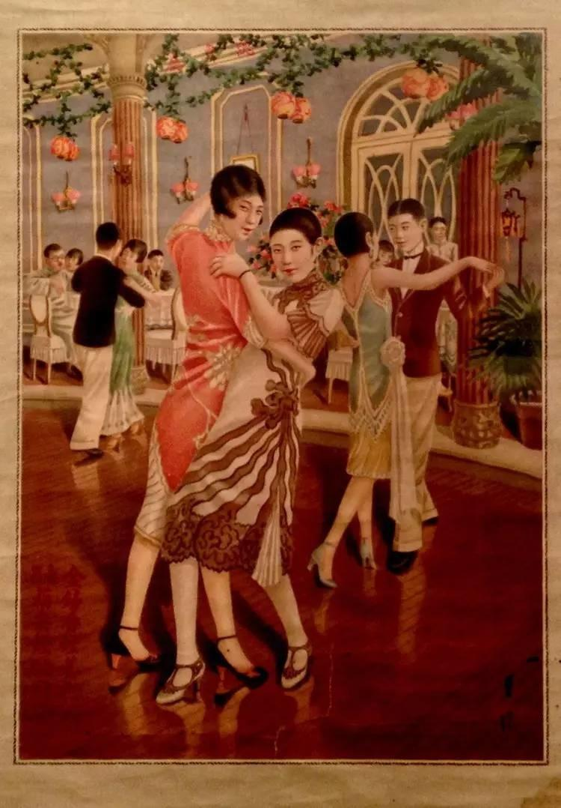
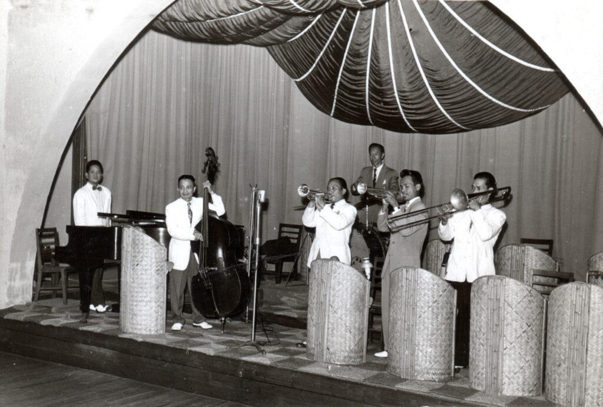

Shanghai Nightclub, 1929 — what it felt like
You don’t arrive quietly—you arrive through layers.
First the street: humid air, engine fumes, a flicker of neon reflecting off damp pavement. Rickshaws and imported cars share the same space uneasily. The Bund glows, but it’s not calm—it hums.
Inside, the temperature jumps. Not just heat—density. Perfume, tobacco, sweat, polished wood. You feel it before you see anything clearly.
The sound
It’s jazz—but not the kind you’d hear in New York City.
The rhythm is familiar—brass, piano, drums—but something slips in the phrasing. The band might include Chinese musicians trained on Western instruments, or foreign players adapting on the fly. Notes bend slightly. Timing stretches just enough to feel unstable.
You don’t fully recognize it, which is exactly the point.
Conversations layer over the music:
English with clipped colonial confidence
Shanghainese, fast and fluid
Russian, sharp-edged from exile
Nothing resolves into a single soundscape. It’s overlap—constant, unresolved.
The light
It’s dim, but not soft.
Electric light is still new enough to feel theatrical. Bulbs glow through colored shades—reds, ambers—casting skin in warmer tones than reality. Mirrors multiply everything: movement, bodies, glances.
You can’t quite tell where the room ends.
The bodies
Movement is close, deliberate.
Women in fitted qipao—silk catching the light with each step—move between tables or onto the floor. Some are there by choice, others by necessity. You don’t always know which.
Men watch, negotiate, perform status:
A British trader signals wealth without speaking
A Chinese industrialist does the same, differently
A Russian émigré tries to look like he still belongs somewhere
Touch is transactional as often as it is spontaneous. A hand on a wrist can mean invitation—or arrangement.